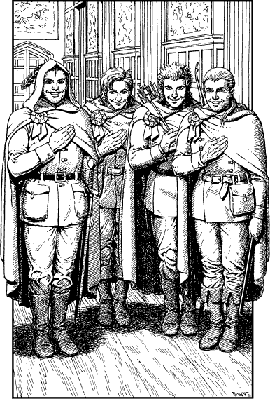

238
The Baron escorts you and Banedon through the echoing corridors of his castle, past watchful ranks of court guards and Border Rangers, to a hall which is lavishly furnished with Durenese oak and rare silken tapestries. Awaiting you there are a group of young men attired in hooded grey cloaks and close-fitting tunics. You recognize them immediately, for they are four of your most promising students—Kai Masters Black Hawk, Star Lynx, Blazer, and Steel Hand.

‘Praise Ishir you’ve returned to us, Grand Master!’ says Black Hawk, laying his right hand across his chest in a formal Kai salute. His companions breathe an audible sigh of relief as they, too, salute you and bow in deference to your rank.
‘Stand easy, my lords,’ you say, smiling as you motion them to relax. ‘It warms my heart and gives me strength to be with you again.’
‘We have heard the Guildmaster’s account,’ says red-haired Blazer, ‘and we await your orders, my lord. Upon your command we will find the impostor and avenge the honour of the Kai.’
You are about to give your answer when a court herald announces the unexpected arrival of Lord Foilan, Reeve-lieutenant of Tyso, the man charged with keeping law and order in the city. Upon entering the hall he is momentarily taken aback by the sight of you standing at the Baron’s side.
‘Calm yourself, Foilan,’ says Baron Medar, ‘this is the true Lone Wolf, not the impostor who stalks our land. What news have you?’
‘Sire … the Kai impostor has been sighted within the hour by rangers in the city’s North Quarter. They tried to take him captive but he slew two and wounded three of their number before escaping into the old necropolis. The city watch now have both entrances to the necropolis secure—he will not be permitted to escape.’
‘Very good, my lord,’ retorts the Baron. ‘So we have him cornered.’
‘If he’s gone to ground in the old necropolis,’ says Banedon, ‘he’ll be hard to track down. The catacombs of that ancient burial field are vast. It could take months to search them all.’
‘Never fear,’ you say confidently. ‘With the help of my able young Kai Masters I shall track and trap this impostor before dawn.’
‘Aye, my lord,’ pipes Star Lynx, elated by the thought of the hunt, ‘we’ll flush this cur from his hole before sunrise and bring him to justice.’
Guided by Lord Foilan, you take your leave of Banedon and Baron Medar and depart from the castle on horseback, accompanied by your eager Kai. During your ride through the twisting, lantern-lit streets of Tyso, you learn from Foilan that there are only two ways in and out of the city’s old necropolis: by its South Gate or by its Western Arch.
‘The impostor fled into the burial ground by the South Gate, my lord,’ says Foilan, ‘but that was more’n an hour ago. He’ll be deep un’erground by now.’
If you wish to ask Foilan to lead you to the South Gate of the necropolis, turn to 337.
If you choose to ask that he take you to the Western Arch instead, turn to 323.